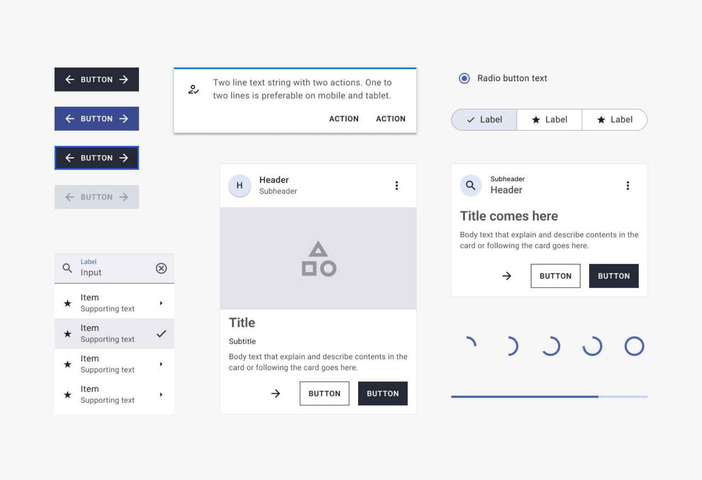
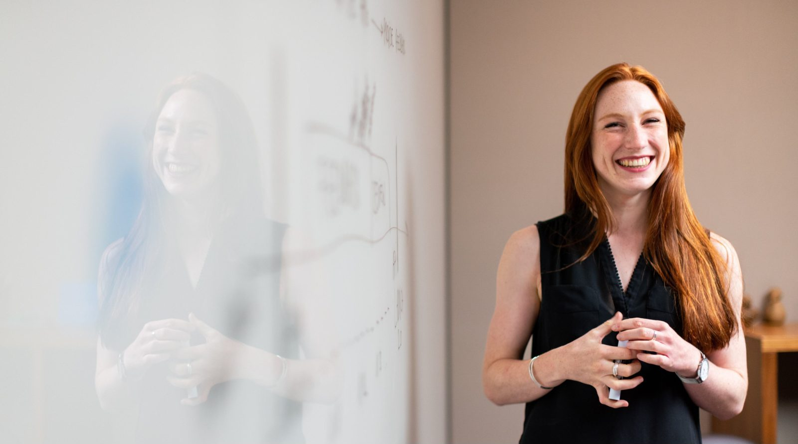
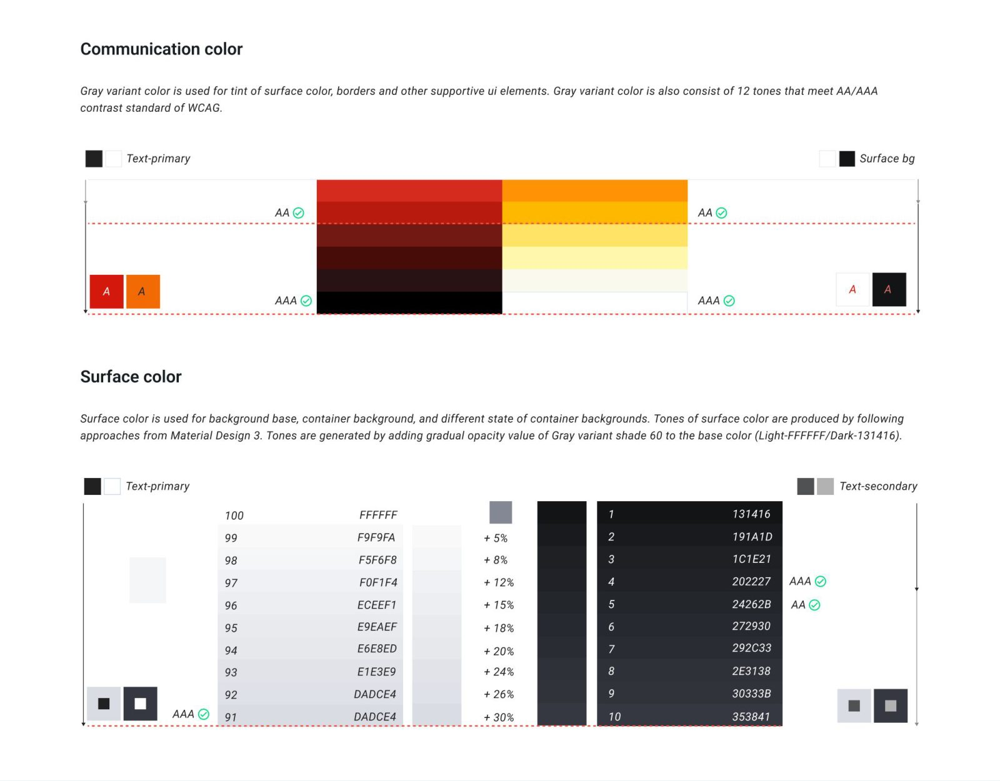
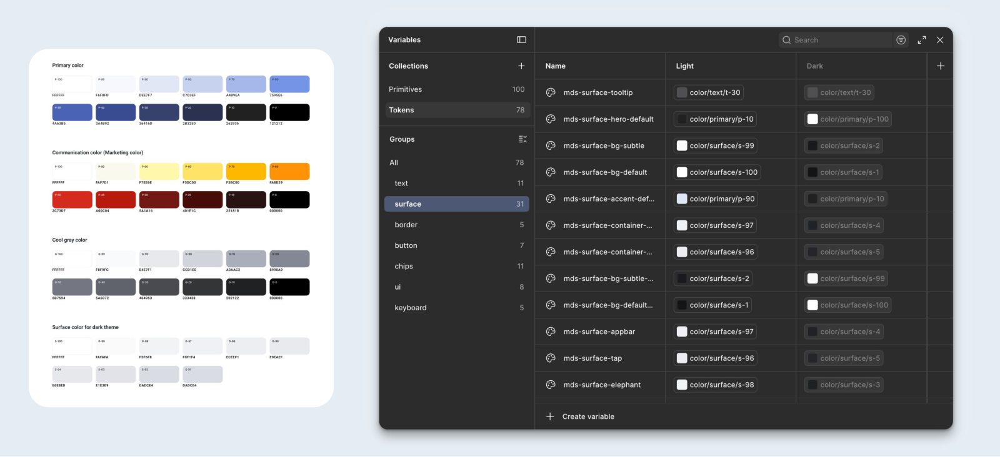
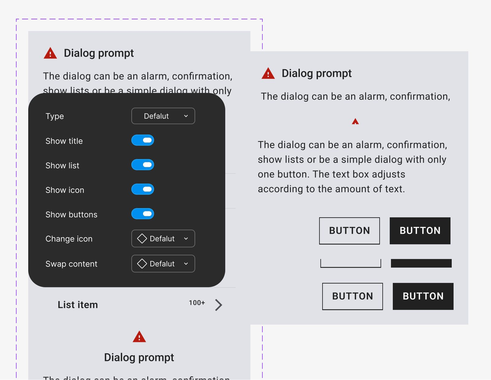

Skipper
Build a Mothership of Design Systems
Hiab needed a mothership of design systems: a single source of truth for design, as multiple design systems had accumulated over time. I helped create and maintain a centralized design system with a scalable foundation that different teams could branch from, customize, and maintain consistently across various products.

Introduction
Hiab Finland Oy is a global leader in loader equipment and has developed a range of digital services throughout its long history. As they have diverse projects, individual design systems were created and maintained separately for each product.
This project was an initiative to change that approach. Rather than continuing to use isolated systems with untraceable visual materials, the goal was to establish a shared foundation that could be used across diverse teams and projects.
The new design system included editorial guidelines, visual guidelines, accessibility standards, color tokens, and reusable components. At the same time, it was designed to provide a solid branching foundation allowing individual projects to branch the core system and customize it according to their specific needs.
My role
As a UX Designer, I was responsible for:
- Establishing the foundation of the design system and testing its adoption in existing projects.
- Expanding and maintaining the system.
- Collaborating with the designers and developers in the Swedish team.
Problem
Multiple design systems were being developed and used independently across different teams, which created several challenges:
- Visual identity was inconsistent across products.
- Teams were spending time and resources repeatedly rebuilding similar design system elements.
- Important foundational rules and guidelines were missing, resulting in inconsistent quality and decision-making.

Process
-
Build what other teams actually needed
The key challenge was to make the new design system genuinely more useful than the systems teams were already using, so that designers would see a clear reason to adopt it. I began by analyzing the existing design systems used by different designers and speaking directly with them to understand their needs, frustrations, and workflows. Based on these insights, I focused on several areas that could provide immediate value while also creating a stronger foundation for future development.
-
New color token system
I introduced a color token system using Figma Variables, which was a relatively new feature at the time and had not been used in the existing design systems. This provided two key benefits:
- Multiple color modes could be defined and easily applied in prototypes, making it easier to test, manage, and maintain different visual themes.
- The token-based color system created a clearer connection between the design and development environments. This made it easier to translate the design color system into code and improved communication between designers and developers.


-
Flexible components through component properties
Designers working across different projects had different requirements for their components. Instead of creating separate versions for every use case, I used component properties to make the components flexible while keeping their core structure simple.
This allowed a single component to adapt to different contexts and requirements without unnecessarily increasing the complexity of the design system.

-
Creating a shared foundation for future collaboration
By this point, many projects had already been in development for several years, so completely unifying every existing design into one system was neither realistic nor necessary.
Instead, the goal was to establish a shared foundation: a set of essential guidelines, principles, and reusable elements that teams could gradually adopt.
To support this approach, I introduced branching and editorial guidelines, allowing individual projects to build on the shared foundation while maintaining the flexibility to adapt the system to their own needs.
The focus was not on forcing an immediate transformation, but on creating a system that could grow organically, support collaboration, and provide a common language for designers and developers across teams.
Impact
-
Expanded adoption across projects
The Mothership design system was adopted by more than three projects. I also began collaborating with the Swedish team to further develop the system and expand its application across additional products.
-
Improved design–development consistency
The design color system was converted into a format that could be directly used in development. This enabled better integration between design and code, making color tokens more consistent and communication between designers and developers more precise and efficient.